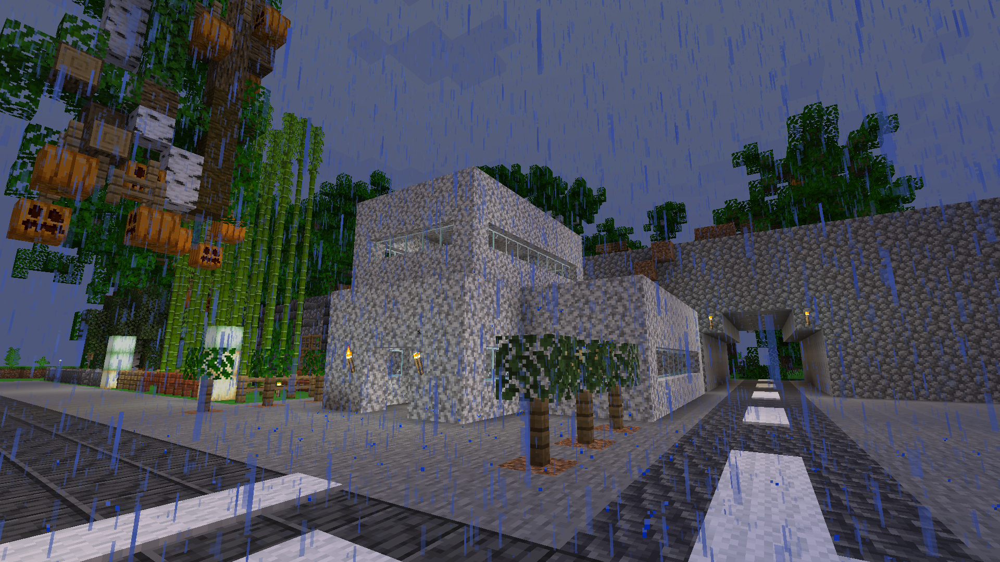
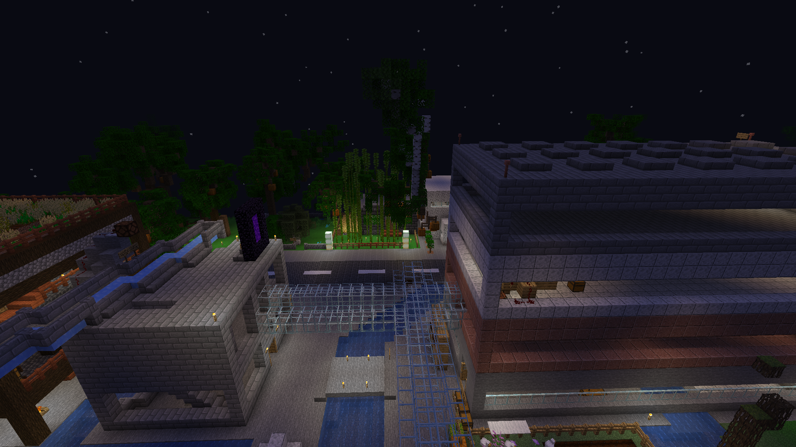

加津市 City of Katze
ようこそ加津へ!!

このサイトはminecraft®のサーバー「EarthMC」のパプアニューギニア西部に位置する「加津市(Katze)」の公式サイトです。

Für die deutsche Version der Website klicken Sie bitte hier.
目次(サイトマップ)
住民登録について
マップ
Das Neu Katze Zeiten
プロット一覧
Schön Katze公式サイト
味噌金転売所公式サイト
ニュース